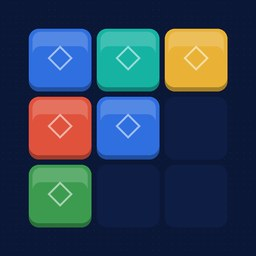
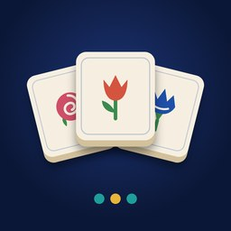

İznik çinilerinden ilham alan, sakin ve rahatlatıcı bulmaca oyunları.
Relaxing puzzle games inspired by Turkish İznik tiles.

Çini blokları tahtaya yerleştir, satır ve sütunları temizle.
Place tile blocks, clear rows and columns.

Aynı desenden üç taşı bul, katlı tahtayı temizle.
Match three identical tiles and clear the layered board.